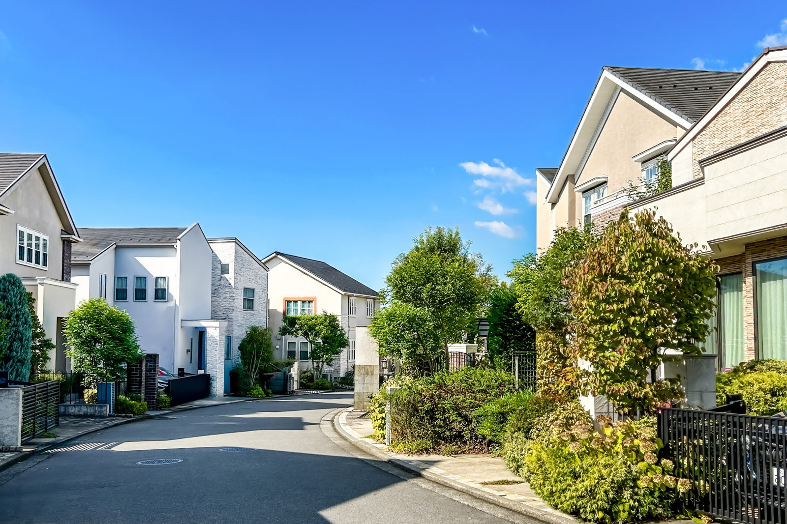
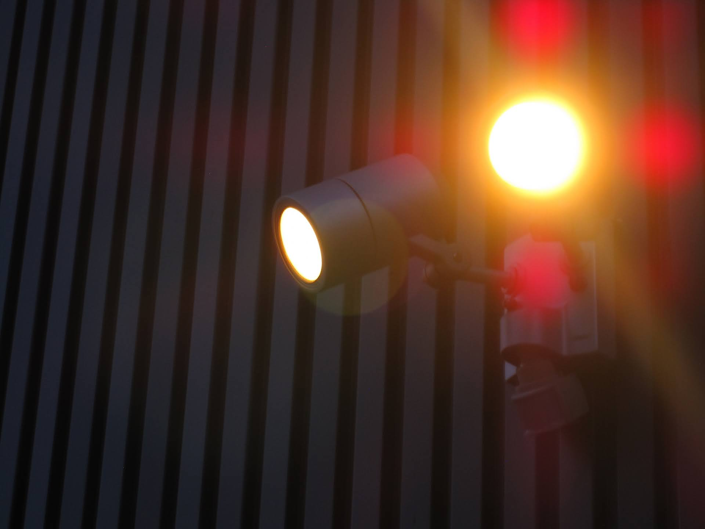
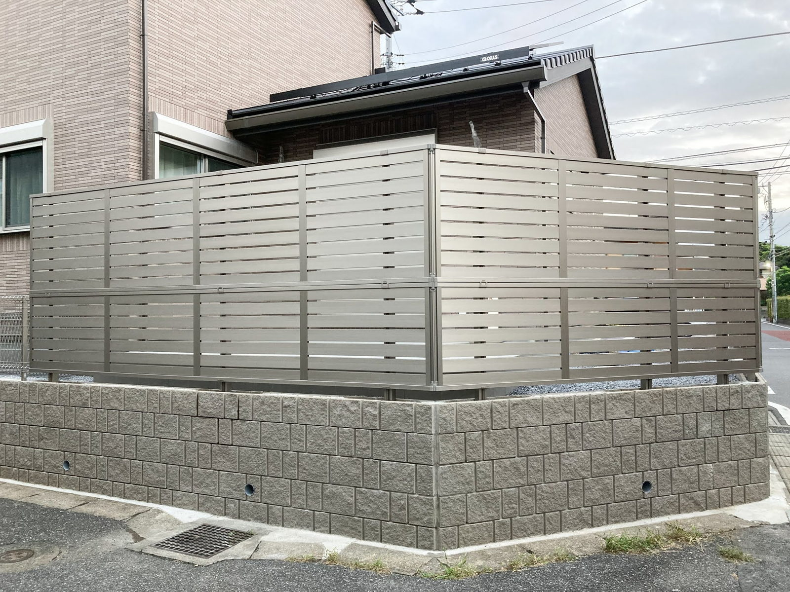

空き巣に入られる家と、入られない家。
何が違うと思いますか？
泥棒は、いきなり入ってくるのではありません。
必ず下見をして、入りやすそうな家を選びます。
裏を返せば、「この家は入りにくい」と思わせれば狙われにくくなります。
大工社長が、狙われやすい家の特徴を動画で話しました。
今すぐできる対策と、これから建てる家の防犯設計まで。
おかげさまで9万回以上再生されている人気回です。

こんな家は狙われやすい（3つの特徴）
泥棒が下見で探しているのは、入りやすい家です。
動画で挙げた、狙われやすい家の特徴は次の3つです。
- 特徴12階に上がりやすい家（物置やカーポートの屋根が足場になる）
- 特徴2面格子がある家（バールやドライバーで簡単に外れることがある）
- 特徴3シャッターが閉まっている家（留守だと判断されやすい）
面格子は、防犯のために付けられてきました。
ですが、外からドライバーで留めるタイプは数分で外れることがあります。
「シャッターを閉めていれば安心」。
「2階だから大丈夫」。
その思い込みこそが、実はいちばん危険です。
だからこそ、「この家は入りにくい」と思わせることが最大の防犯です。
社長いわく、侵入に5分以上かかりそうだと思ったら、まずその家は狙わない。
手間と時間がかかる家にしておくことが、いちばんの防犯になります。
今すぐできる、4つの防犯対策
今ある家でも、自分でできる対策があります。
空き巣の侵入経路は、窓を割って入る割合が半分以上。
だから、まずは窓です。
- 窓を強化する
防犯フィルムを貼る（100均でも手に入ります）。
できれば専門業者に頼み、CPマーク付きの防犯ガラス並みの強度に。
サッシの上下に補助ロックを付けると、窓を割られても鍵が開きにくくなります。 - 人の気配を演出する
留守で家が真っ暗だと「誰もいない」と判断されます。
タイマーで、一部屋でも照明がつくように。
旅行や帰省の前は、郵便局や新聞販売店に連絡して配達を止めてください。 - 音や光を活用する
防犯砂利は、踏むとジャリジャリと大きな音がします。
人感センサーライトも有効です。
泥棒は「見られること」「音が出ること」をとても嫌います。 - 防犯カメラをつける
「ここにカメラがあります」と分かるよう、大きく目立つものを。
ダミーでも抑止力になります。
記録のためではなく、見せつけて未然に防ぐために使います。

「見られている」と感じさせるのが効きます。
これから建てるなら、設計で防ぐ
新築なら、設計の段階から防犯性を高められます。
動画で挙げたポイントは次の4つです。
- 死角をなくす
高すぎる塀や植栽、目隠しフェンスは、侵入者の隠れ場所になります。
外から見えにくい家は、入られた後に隠れる場所も生みます。
なるべく死角を作らない配置にします。 - 窓の位置とサイズを計画する
侵入経路の半分以上が窓です。
人目につかない裏側などの窓は、人が入れない大きさ（40cm以下）に。
叩いても割れにくく音が出る防犯ガラスを採用すると、狙われにくくなります。 - 勝手口を見直す
勝手口は、玄関扉より防犯性能が劣りがちです。
本当に必要か、いちど考えてみてください。 - 足場になる物を窓の下に置かない
給湯器やエコキュートの室外機、カーポートの屋根。
これらは2階の窓やベランダへの足場になり得ます。
配置をずらすなどの工夫をします。

「見通し」と「足場をつくらない」が基本です。
狙われない家にする、たったひとつの考え方
動画のまとめは、とても単純です。
泥棒は、1分もかからず入れる家と、5分以上かかる家を比べます。
そして、5分以上かかる家は必ず避けます。
防犯ガラスや補助鍵で、侵入に時間をかけさせる。
防犯カメラ・センサーライト・防犯砂利で、対策済みだと見せる。
この積み重ねが、「この家はやめておこう」と思わせます。
自分でできる対策から、少しずつ始めてみてください。

奈良の工務店シバ・サンホームで、初めての家づくりに伴走しています。お金のことこそ正直に。モットーはスピード・誠実さ・楽しさ。